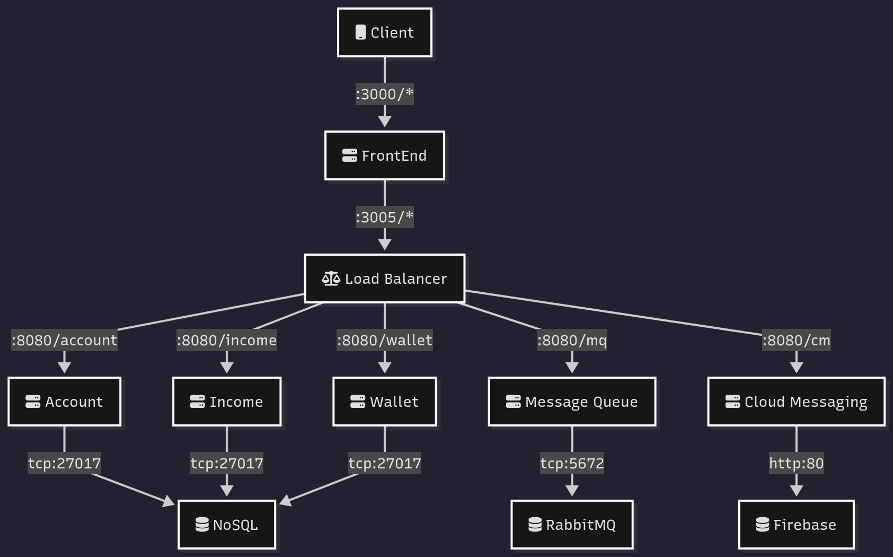
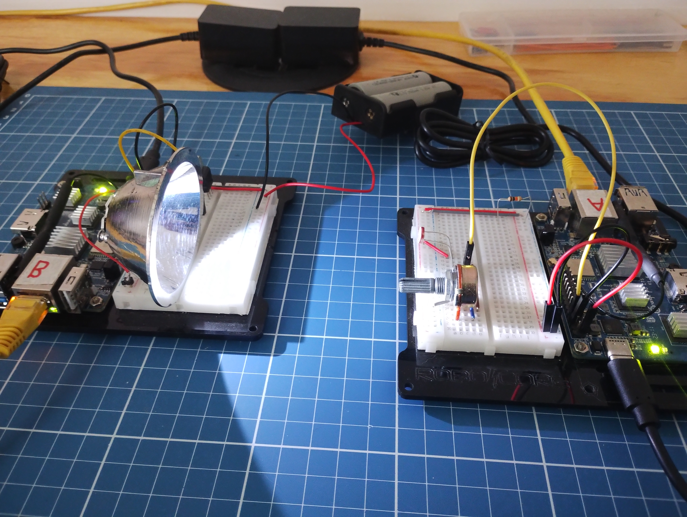
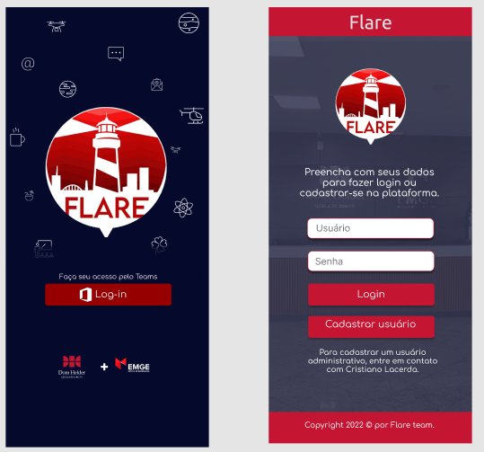

Projects
Bank Elastic Stack
A microservices architecture that uses Docker, Kubernetes, and Helm for deployment orchestration. Includes services for account, wallet, income, and messaging, integrated with MongoDB, RabbitMQ, and Firebase. Features a responsive web client and load balancer to simulate a real-world banking infrastructure.
Visible Light Communication
A research project developed as part of a Computer Science graduation thesis at Dom Helder College. It explores data transmission using visible light (VLC) as an alternative to Wi-Fi, demonstrating a working prototype with an OrangePi SBC capable of reliable data transfer via LED modulation.
Flare - Notification System
An academic challenge project focused on improving communication between schools, teachers, and students through an urgent alert system. Built with Java Spring Boot and a front-end developed in HTML/CSS, the app enables real-time notifications for delays, events, and other institutional updates.